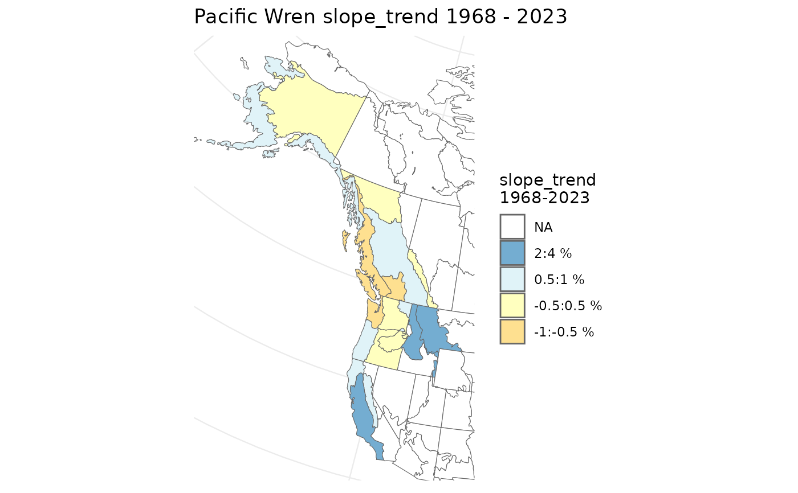
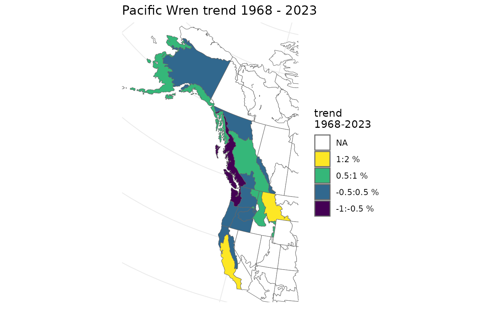
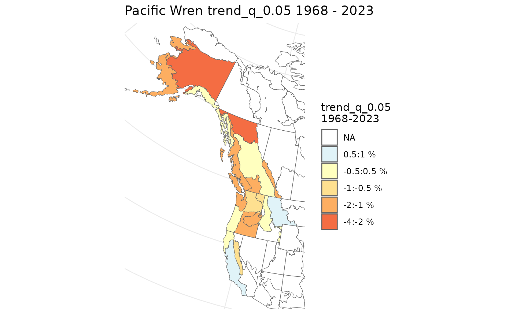

plot_map() allows you to generate a colour-coded map of the percent
change in species trends for each strata.
Usage
plot_map(
trends,
slope = FALSE,
title = TRUE,
alternate_column = NULL,
col_viridis = FALSE,
col_ebird = FALSE,
strata_custom = NULL,
zoom_range = TRUE
)Arguments
- trends
List. Trends generated by
generate_trends().- slope
Logical. Whether or not to map values of the alternative trend metric (slope of a log-linear regression) if
slope = TRUEwas used ingenerate_trends(), through the annual indices. DefaultFALSE.- title
Logical. Whether or not to include a title with species. Default
TRUE.- alternate_column
Character, Optional name of numerical column in trends dataframe to plot. If one of the columns with "trend" in the title, (e.g., trend_q_0.05 then the colour scheme and breaks will match those used in the default trend maps)
- col_viridis
Logical. Should the colour-blind-friendly "viridis" palette be used. Default
FALSE.- col_ebird
Logical, Alternative colour palette for trend values, based on the colour palette used for eBird status and trend maps.
- strata_custom
(
sf) Data Frame. Data frame of modified existing stratification, or asfspatial data frame with polygons defining the custom stratifications. See details on strata_custom instratify().- zoom_range
Logical. When TRUE (default) zooms into region of the map where trend data are available. If FALSE, map extends out to cover all of the stratification map. Zoom-in uses
ggplot2::coord_sf()
See also
Other indices and trends functions:
generate_indices(),
generate_trends(),
plot_geofacet(),
plot_indices()
Examples
# Using the example model for Pacific Wrens...
# Generate the continental and stratum indices
i <- generate_indices(pacific_wren_model)
#> Processing region continent
#> Processing region stratum
# Now generate trends
t <- generate_trends(i, slope = TRUE)
# Generate the map (without slope trends)
plot_map(t)
# Generate the map (with slope trends)
plot_map(t, slope = TRUE)

# Viridis
plot_map(t, col_viridis = TRUE)

# Generate a map (with alternate column - lower 95% Credible limit)
plot_map(t, alternate_column = "trend_q_0.05")
